Lecture video
Tissues & Histology: full lecture
Open these in a new tab to follow along while the video plays. Tip: download to your tablet and write notes.
Focus: Human Anatomy
Tissues & Histology
Cells rarely work alone. A tissue is a group of similar cells and their surrounding material that work together for a shared job. The body builds everything from just four tissue types. In a combined class this anatomy unit pairs with the tissue physiology unit. Dr. Sharilyn Rennie
Download the PowerPoint · need a PDF? Download the accessible PDF from Canvas.
Part 1
Tissues & How to Read a Slide
Four tissue types build the whole body. Learn what each does, then learn to recognize it on a microscope slide.
Part 1 · The big picture
The four tissue types
- Epithelial tissue covers body surfaces and lines cavities, organs, and vessels. It protects, absorbs, secretes, and filters.
- Connective tissue supports, binds, and protects. Its cells sit in an extracellular matrix they make.
- Muscle tissue contracts to produce movement.
- Nervous tissue carries electrical signals for communication and control.
- Every organ is a working mix of these four.
The four primary tissue types and their core jobs.
Part 1 · Reading histology
How to read a slide
- Find the nuclei first. On routine H&E, nuclei stain dark purple-blue and cytoplasm stains pink.
- Ask the four questions: How are the cells shaped? How are they arranged? How much space (matrix) is between them? What is in that space?
- Then look for special structures. Is there a free surface or open lumen? Any cilia, a brush border, goblet cells, striations, or cells sitting in lacunae? These details name the exact tissue.
- Lots of cells, little matrix points to epithelium or muscle. Few cells, lots of matrix points to connective tissue.
- Basement membrane: the thin layer that anchors epithelium to the connective tissue beneath it.
- Matrix has two parts: ground substance (the gel) and fibers (collagen, elastic, reticular).
Part 1 · The algorithm
A tissue ID algorithm
Work top to bottom. Each question narrows the field until one tissue is left, then sub-classify.
Three yes/no questions sort every slide into one of the four tissue types.
Part 2
Epithelial Tissue
Sheets of tightly joined cells that cover and line. One free surface, one anchored surface, almost no matrix.
Part 2 · Ground rules
Epithelium: characteristics & naming
- Cellularity: tightly packed cells joined by junctions, very little matrix.
- Polarity: an apical (free) surface and a basal surface on a basement membrane.
- Avascular: no blood vessels; fed by diffusion from the connective tissue below. Innervated and highly regenerative.
- Named two ways at once: by layers (simple = one, stratified = many, pseudostratified = looks layered but all cells touch the base) and by cell shape (squamous = flat, cuboidal = cube, columnar = tall).
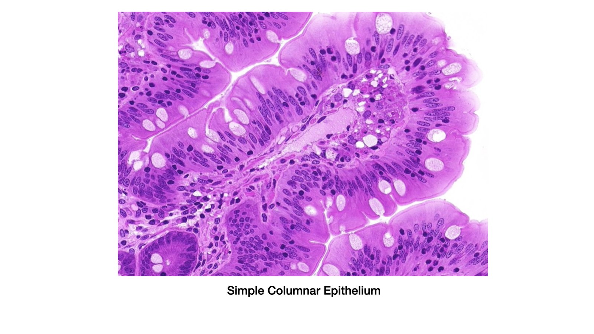
Simple columnar epithelium: one layer, named by its tall cell shape.
Histology plate by Dr. Sharilyn Rennie. Micrographs adapted from LeBoffe histology (Rowley).
Part 2 · One layer
Simple epithelia
Simple squamous
- Where: air sacs of the lungs (alveoli), lining of vessels and the heart (endothelium), serous membranes (mesothelium).
- Job: fast diffusion and filtration; secretes lubricating serous fluid.
- Spot it: one layer of thin, flat cells with a bulging flattened nucleus; like floor tiles.
Simple cuboidal
- Where: kidney tubules, gland ducts, thyroid follicles, ovary surface.
- Job: secretion and absorption.
- Spot it: single row of cube-shaped cells with round central nuclei, usually around a lumen.
Simple columnar
- Where: lining of the digestive tract from stomach to rectum, gallbladder, uterine tubes.
- Job: absorption and secretion; may carry microvilli and mucus-making goblet cells.
- Spot it: single row of tall cells with oval nuclei lined up near the base; look for goblet cells.
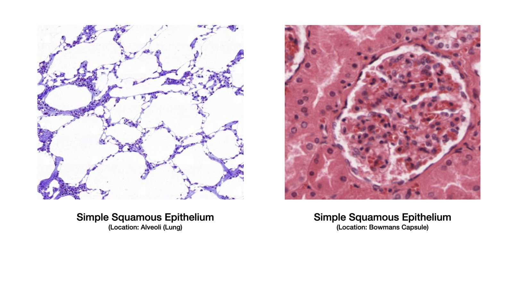
Simple squamous
Histology plate by Dr. Sharilyn Rennie. Micrographs adapted from LeBoffe histology (Rowley).
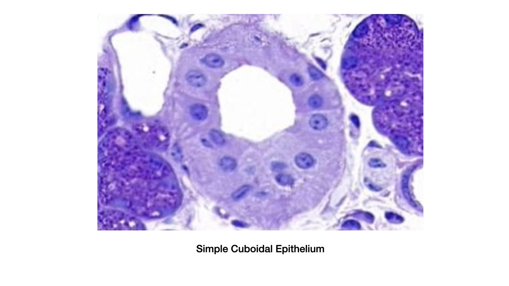
Simple cuboidal
Histology plate by Dr. Sharilyn Rennie. Micrographs adapted from LeBoffe histology (Rowley).
Simple columnar
Histology plate by Dr. Sharilyn Rennie. Micrographs adapted from LeBoffe histology (Rowley).
Part 2 · Many layers & look-alikes
Stratified & specialized epithelia
Stratified squamous
- Where: non-keratinized: mouth, esophagus, vagina (moist). Keratinized: epidermis of skin (dry).
- Job: protects against abrasion; the keratinized form also blocks water loss and pathogens.
- Spot it: many layers, flattened at the surface; keratinized loses surface nuclei (dead, keratin-filled).
Transitional (urothelium)
- Where: bladder, ureters, urethra.
- Job: stretches as the organ fills and recoils when it empties.
- Spot it: rounded dome-shaped surface (umbrella) cells that flatten when stretched.
Pseudostratified ciliated columnar
- Where: trachea and upper airways.
- Job: sweeps a mucus sheet with cilia; goblet cells make the mucus.
- Spot it: looks layered but every cell touches the base; cilia on top, goblet cells between.
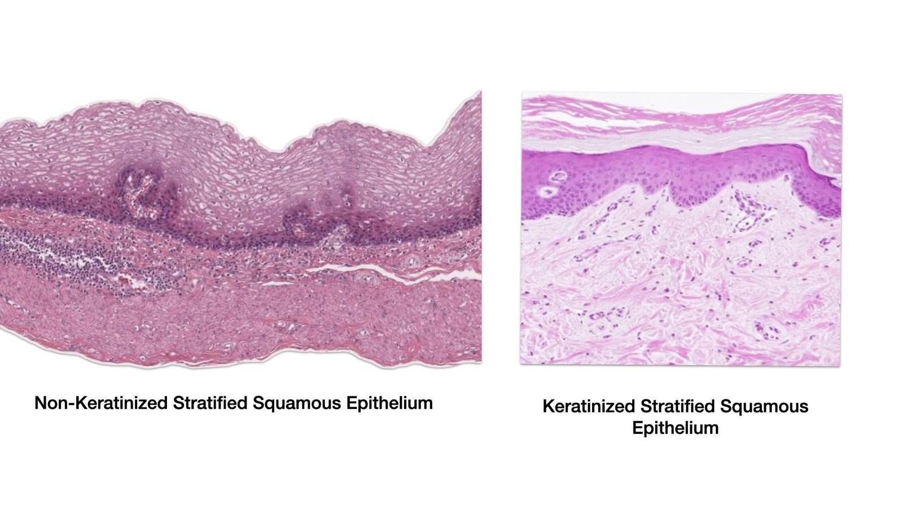
Stratified squamous: non-keratinized & keratinized
Histology plate by Dr. Sharilyn Rennie. Micrographs adapted from LeBoffe histology (Rowley).
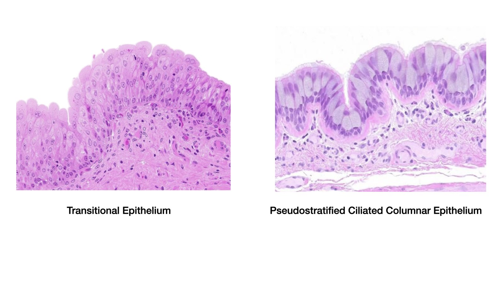
Transitional & pseudostratified ciliated columnar
Histology plate by Dr. Sharilyn Rennie. Micrographs adapted from LeBoffe histology (Rowley).
Part 2 · The epithelium key
Identifying an epithelium, step by step
Once a free surface and basement membrane tell you it is epithelial, count the layers, then read cell and nucleus shape.
Layers first, then shape: the path to every epithelial type.
Part 2 · Epithelium at work
Glands are made of epithelium
- Epithelium folds inward during development to build glands, cells specialized to secrete.
- Exocrine glands keep a duct and secrete onto a surface: sweat, salivary, mammary, sebaceous, and the mucus-secreting goblet cell (a one-cell gland).
- Endocrine glands lose their duct and secrete hormones into the blood: thyroid, adrenal, pituitary.
- Goblet cells are the unicellular exocrine glands you can spot on a slide in the gut and airway.
Part 3
Connective Tissue Proper
The body's most abundant and varied tissue. Few cells, lots of matrix. The matrix, not the cells, defines each type.
Part 3 · The common plan
Every connective tissue, same three parts
- Cells that build and maintain the tissue.
- Ground substance: the gel (water, sugars, and adhesion proteins) the cells and fibers sit in.
- Fibers: collagen (strong, resists pulling), elastic (stretch and recoil), reticular (fine branching scaffold).
- Together, ground substance plus fibers make the extracellular matrix. Most connective tissue is well supplied with blood (cartilage is the exception).
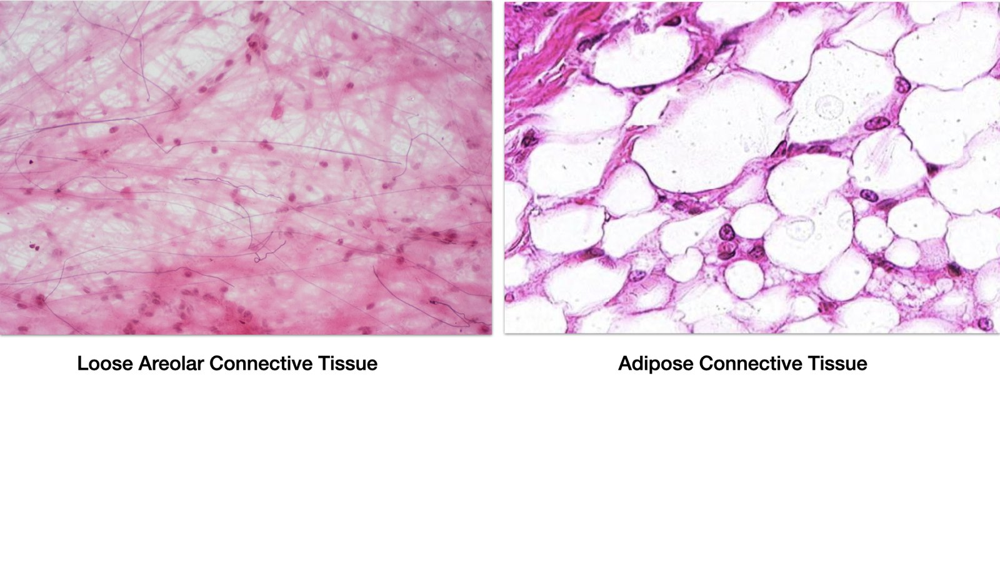
Connective tissue: a few cells spread through a matrix of fibers and gel.
Histology plate by Dr. Sharilyn Rennie. Micrographs adapted from LeBoffe histology (Rowley).
Part 3 · The connective key
Identifying connective tissue
Once the cells are clearly spread out in a matrix, the matrix itself sorts connective tissue into four groups.
Read the matrix: loose, dense, supporting, or fluid, then name the type.
Part 3 · The players
Connective tissue cells & fibers
- Building cells end in -blast and secrete the matrix: fibroblast (CT proper), chondroblast (cartilage), osteoblast (bone).
- Maintaining cells end in -cyte: fibrocyte, chondrocyte, osteocyte.
- Defense and storage cells live in the matrix: macrophages (engulf debris), mast cells (release histamine), plasma cells, and fat-storing adipocytes.
- Three fibers, three jobs: collagen for strength, elastic for stretch and recoil, reticular for a supportive net.
Part 3 · Loose CT
Loose connective tissue: areolar & adipose
Loose areolar
- Where: under every epithelium, around vessels, nerves, and organs (the body's packing material).
- Job: holds tissue fluid, cushions, and stages immune defense.
- Spot it: loose web of all three fiber types with wide gaps and scattered fibroblasts and defense cells.
Adipose (fat)
- Where: under the skin, around the kidneys and heart, behind the eyes, in breasts.
- Job: stores energy, insulates against heat loss, and cushions organs.
- Spot it: tightly packed cells each filled by one large fat droplet that pushes the nucleus to the rim (signet-ring look).
Loose areolar (left) and adipose (right).
Histology plate by Dr. Sharilyn Rennie. Micrographs adapted from LeBoffe histology (Rowley).
Part 3 · Dense & reticular CT
Dense regular, dense irregular & reticular
Dense regular
- Where: tendons (muscle to bone) and ligaments (bone to bone).
- Job: resists strong pull in one direction; heals slowly because it is poorly vascular.
- Spot it: parallel pink collagen bundles with rows of fibroblast nuclei squeezed between them.
Dense irregular
- Where: dermis of the skin, organ capsules, and submucosa.
- Job: resists tension coming from many directions.
- Spot it: thick collagen bundles running every which way, with fibroblast nuclei scattered among them.
Reticular
- Where: framework (stroma) of lymph nodes, spleen, and bone marrow.
- Job: a soft scaffold that holds free cells in place.
- Spot it: a fine, dark, branching network of reticular fibers (shown with a silver stain) cradling cells.
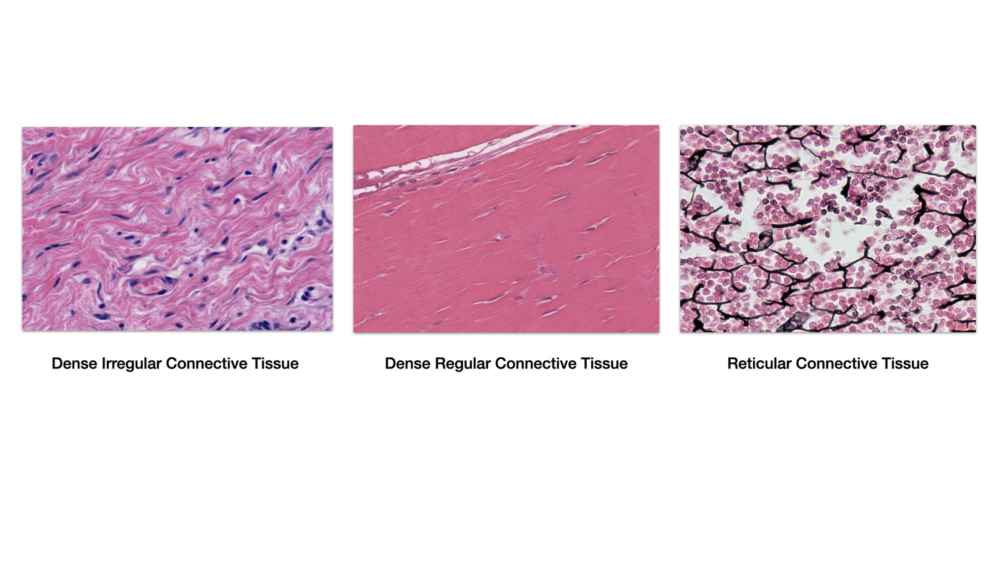
Dense irregular, dense regular, and reticular.
Histology plate by Dr. Sharilyn Rennie. Micrographs adapted from LeBoffe histology (Rowley).
Part 4
Supporting & Fluid Connective Tissue
Cartilage and bone support the body; blood is a connective tissue with a liquid matrix.
Part 4 · Cartilage
Cartilage: three kinds
Cells called chondrocytes sit in small spaces (lacunae) in a firm gel matrix. Cartilage is avascular, so it heals slowly.
Hyaline
- Where: ends of long bones (articular), costal cartilage, nose, trachea and larynx, the fetal skeleton.
- Job: smooth, low-friction surface; flexible support.
- Spot it: glassy pale matrix with chondrocytes in lacunae, often paired.
Elastic
- Where: external ear and the epiglottis.
- Job: keeps shape while bending and springing back.
- Spot it: chondrocytes in a matrix packed with dark elastic fibers.
Fibrocartilage
- Where: intervertebral discs, pubic symphysis, knee menisci.
- Job: absorbs compression and shock; very strong.
- Spot it: rows of chondrocytes between thick, visible parallel collagen bundles.
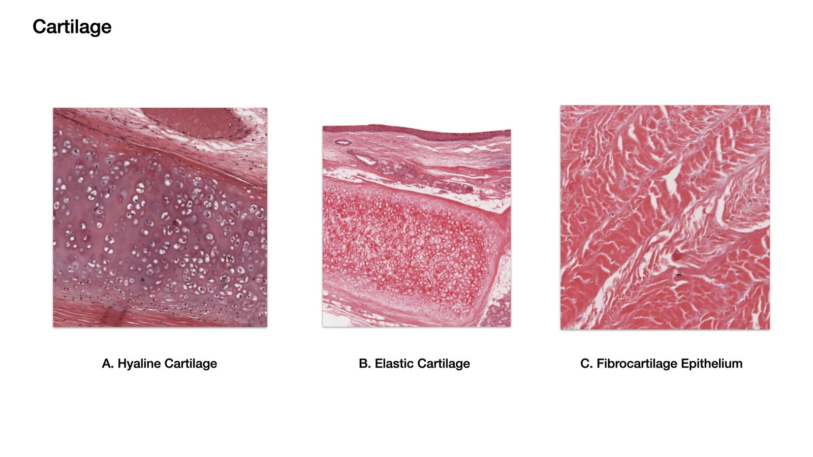
Plate: hyaline, elastic, and fibrocartilage.
Histology plate by Dr. Sharilyn Rennie. Micrographs adapted from LeBoffe histology (Rowley).
Part 4 · Bone
Bone (osseous tissue)
- Hardest connective tissue: a matrix of collagen for tension plus calcium phosphate (hydroxyapatite) for compression.
- Osteocytes sit in lacunae arranged in rings (concentric lamellae) around a central (Haversian) canal, forming a unit called an osteon.
- Canaliculi are tiny channels linking the lacunae so osteocytes can share nutrients.
- Well vascularized, so it heals far better than cartilage.
- Jobs: supports and protects, gives muscles levers to pull on, stores calcium, and houses blood-forming marrow.
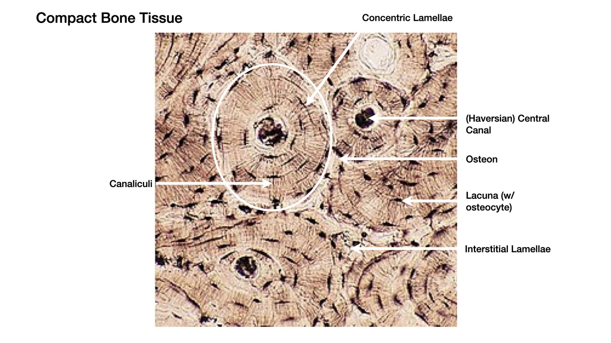
Compact bone: osteons, each a central canal ringed by concentric lamellae with osteocytes in lacunae.
Histology plate by Dr. Sharilyn Rennie. Micrographs adapted from LeBoffe histology (Rowley).
Part 4 · Blood
Blood: a fluid connective tissue
- Liquid matrix: the cells (formed elements) float in plasma, the only liquid matrix in the body.
- Erythrocytes (red cells): biconcave discs with no nucleus; carry oxygen on hemoglobin.
- Platelets: cell fragments that start clotting.
- Leukocytes (white cells): the body's defense, detailed next.
- Jobs: transports gases, nutrients, and wastes; defends; and clots.
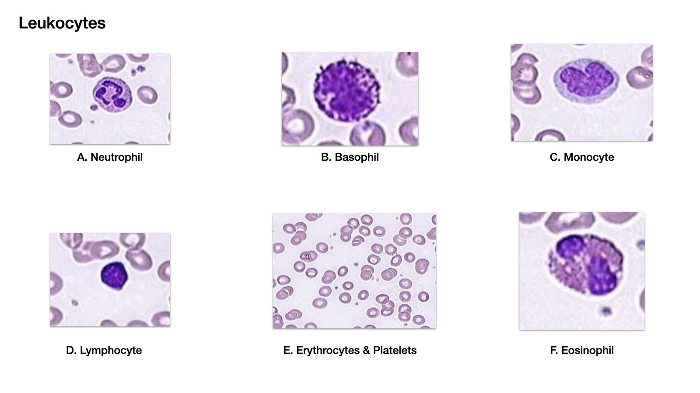
Plate: the white blood cells, plus erythrocytes and platelets.
Histology plate by Dr. Sharilyn Rennie. Micrographs adapted from LeBoffe histology (Rowley).
Part 4 · White cells
The leukocytes
- Granulocytes (visible granules): Neutrophil, multilobed nucleus, the most common WBC, eats bacteria; Eosinophil, bilobed with red-orange granules, fights parasites and allergy; Basophil, granules hide the nucleus, releases histamine in allergy.
- Agranulocytes (no obvious granules): Lymphocyte, big round nucleus with a thin rim of cytoplasm, runs immunity (B and T cells); Monocyte, largest WBC, kidney-shaped nucleus, leaves the blood to become a macrophage.
- Order most to least: Never Let Monkeys Eat Bananas, Neutrophils, Lymphocytes, Monocytes, Eosinophils, Basophils.
Part 5
Muscle Tissue
Cells built to contract. Three kinds, told apart by striations, nucleus count, and whether you control them.
Part 5 · Three muscle types
Muscle tissue
Skeletal
- Where: attached to bones (and some skin).
- Job: voluntary movement of the skeleton; posture and heat.
- Spot it: long, unbranched, striated fibers with many nuclei pushed to the edge.
Cardiac
- Where: wall of the heart (myocardium) only.
- Job: involuntary pumping of blood.
- Spot it: branching striated cells with one central nucleus, joined end to end by intercalated discs.
Smooth
- Where: walls of hollow organs: gut, blood vessels, bladder, uterus, airways.
- Job: involuntary squeezing: peristalsis, vasoconstriction.
- Spot it: short spindle-shaped cells, one central nucleus, no striations.
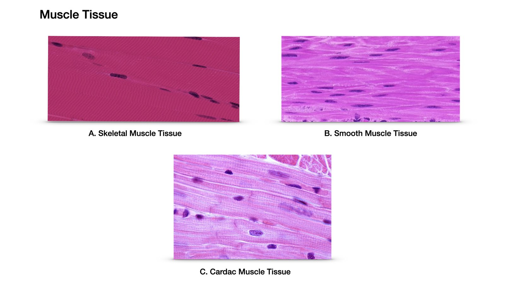
Plate: skeletal, smooth, and cardiac muscle.
Histology plate by Dr. Sharilyn Rennie. Micrographs adapted from LeBoffe histology (Rowley).
Part 5 · Tell them apart
Three quick tells for muscle
- Striations? Skeletal and cardiac are striated; smooth is not.
- How many nuclei, and where? Skeletal has many at the edge; cardiac and smooth have one in the center.
- Branched with intercalated discs? That is cardiac, and only cardiac.
- Voluntary? Only skeletal. Cardiac and smooth run on their own.
Part 6
Nervous Tissue & Putting It Together
The communication tissue, then a synthesis: how the four tissues build organs, and a chance to test yourself.
Part 6 · Communication
Nervous tissue
- Neurons are the signaling cells: a cell body with the nucleus, branching dendrites that receive, and one long axon that sends.
- Neuroglia (glial cells) support, insulate, and protect neurons; they do not carry signals but far outnumber neurons.
- Location: brain, spinal cord, and the nerves running through the body.
- Job: sense, process, and respond, the body's fast control system.
A neuron: dendrites receive, the cell body integrates, the axon sends.
Part 6 · The master key
The whole algorithm, top to bottom
One page, the entire identification path: triage into a tissue type, then drill to the exact tissue.
From any slide: find the nuclei, triage into one of four types, then read down to the specific tissue. Click to enlarge.
Part 6 · The field guide
The complete tissue key: spot every subtype
Triage into one of the four types, then use the one visual tell that names the exact subtype.
One layer (simple)
Simple squamous: single flat layer, flattened “fried-egg” nucleus. Exchange and filtration (alveoli, capillaries).
Simple cuboidal: single box layer, round central nucleus (kidney tubules, glands).
Simple columnar: single tall layer, oval nuclei at the base, often microvilli or goblet cells (gut lining).
Look-alike (one layer that looks like many)
Pseudostratified columnar: all cells touch the membrane but nuclei sit at different heights; cilia + goblet cells (trachea).
Many layers (stratified)
Stratified squamous: many layers, flat at the top. Keratinized = no surface nuclei (epidermis); non-keratinized = nuclei to the top (mouth, esophagus).
Transitional: dome “umbrella” cells that flatten when stretched (bladder, ureters).
Loose CT proper
Areolar: open mesh, all three fiber types, lots of ground substance. Packing material.
Adipose: packed signet-ring fat cells, nucleus shoved to the rim, almost no matrix.
Reticular: delicate branching fiber net; framework of lymph nodes and spleen.
Dense CT proper
Dense regular: one-direction parallel collagen, rows of fibroblast nuclei (tendons, ligaments).
Dense irregular: thick collagen bundles running every direction; resists multi-way pull (dermis, capsules).
Dense elastic: wavy elastic fibers for recoil (artery walls, some ligaments).
Supporting: cartilage (chondrocytes in lacunae)
Hyaline: glassy, no visible fibers; joint surfaces, trachea.
Elastic: visible springy fiber network; external ear, epiglottis.
Fibrocartilage: thick parallel collagen with rows of chondrocytes; discs, menisci.
Supporting: bone (osteocytes in lacunae)
Compact: “tree rings”: concentric lamellae around a central canal = an osteon (Haversian system).
Spongy: open lattice of trabeculae, no osteons; marrow in the gaps.
Fluid CT
Blood: cells suspended in liquid plasma matrix; fibers appear only on clotting.
Skeletal: striated, long unbranched fibers, many nuclei at the edge; voluntary.
Cardiac: striated, branched, one central nucleus, intercalated discs; heart only.
Smooth: no striations, spindle cells, one central nucleus; vessel and organ walls.
Neurons: large cells with long processes (axon, dendrites); carry the signals.
Neuroglia: many small support cells around them; protect, insulate, and feed neurons.
Part 6 · Synthesis
Form follows function, everywhere
- Need a barrier or a lining? Epithelium, packed cells, little matrix.
- Need support or connection? Connective tissue, the matrix does the work; its fibers and ground substance set the properties.
- Need movement? Muscle, with the striation and nucleus pattern matched to the job.
- Need fast signaling? Nervous tissue.
- Organs are teams: the gut wall alone stacks epithelium, connective tissue, two muscle layers, and nervous tissue.
Part 7
Check Your Understanding
Three questions, increasing in depth. Click an option, then reveal the answer.
Part 7 · Recall (DOK 1)
Name the tissue
Depth of Knowledge 1 · Recall
Which tissue type is avascular and always sits on a basement membrane?
Answer
Epithelial tissue has no blood vessels of its own and rests on a basement membrane that anchors it to the connective tissue below.
Part 7 · Skill / concept (DOK 2)
Match structure to type
Depth of Knowledge 2 · Skill and concept
A slide shows branching striated cells with one central nucleus, joined end to end by dark bands. What is it?
Answer
Cardiac muscle. Branching, striations, a central nucleus, and intercalated discs are unique to cardiac muscle.
Part 7 · Strategic reasoning (DOK 3)
Predict from function
Depth of Knowledge 3 · Strategic reasoning
A tendon must resist a strong one-way pull and heals slowly after injury. Which tissue, and why the slow healing?
Answer
Dense regular connective tissue. Parallel collagen bundles handle the one-way pull, but the tissue has a poor blood supply, so it heals slowly.
Part 7 · Lab check
Identify it
Cover the labels and name every tissue on the plates before lab. State its location and one function for each.
Name this epithelium, its location, and one function.
Histology plate by Dr. Sharilyn Rennie. Micrographs adapted from LeBoffe histology (Rowley).
Name each connective tissue here and where it is found.
Histology plate by Dr. Sharilyn Rennie. Micrographs adapted from LeBoffe histology (Rowley).
Wrap-up
Key takeaways
- Four tissue types build the body: epithelial, connective, muscle, nervous.
- Epithelium covers and lines: packed cells, basement membrane, avascular; named by layers and shape.
- Connective tissue is cells in a matrix of ground substance plus fibers; the matrix defines the type.
- Cartilage (chondrocytes in lacunae, avascular), bone (calcified, osteons), and blood (liquid matrix) are connective tissues.
- Muscle: skeletal (striated, voluntary), cardiac (striated, discs), smooth (no striations, involuntary).
- Nervous tissue = neurons (signal) + neuroglia (support).
- Read every slide the same way: nuclei first, then shape, arrangement, and matrix.
Lecture slides
Show the slides for this topic ▸
Open a deck in its own tab so you can scroll it beside the video. Your printed master copy has the same content.